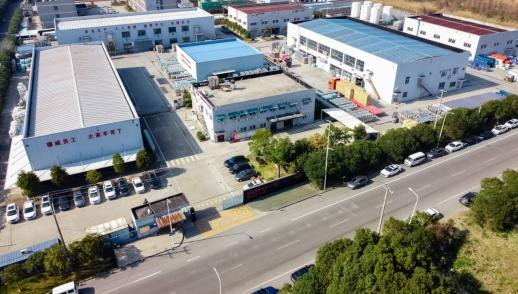
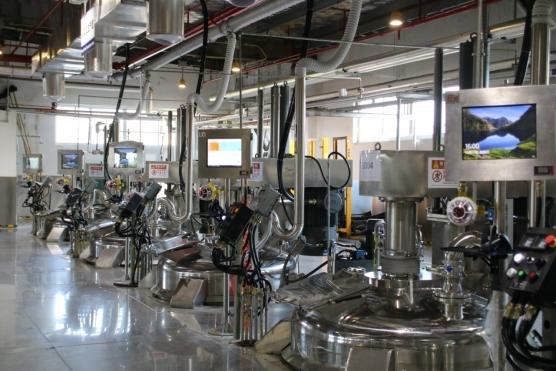
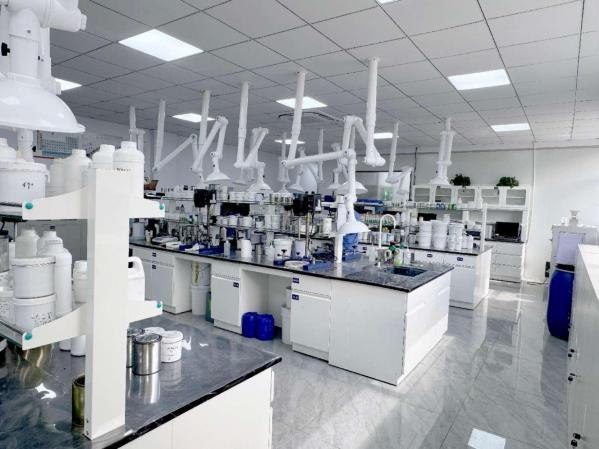

绿色创新
无溶剂配方与施工技术，从源头减少溶剂使用。

德威船舶涂料海外服务平台。
面向中国大陆以外市场，提供船舶涂料销售、产品供应交付、技术咨询、现场涂装施工指导及售后服务。
德威总部官网
德威涂料创立于 2004 年，专注高性能工业涂料的研发与制造。生产基地与专业实验室为船舶涂料的开发、生产及质量管理提供支持。
无溶剂配方与施工技术，从源头减少溶剂使用。
从原材料、生产过程到成品检测，实施质量控制。
专业团队提供选型建议、现场施工指导与项目跟进。
集团四大生产基地形成涂料及新材料产能布局。山东、上海、江苏工厂为船舶涂料业务提供制造支持。
专业实验室将涂料配方研究、施工模拟与测试相结合，连接产品研发、制造过程控制和客户技术支持。

德威在天津创立
逐步建设四大专业生产基地
以工业涂料技术积累服务海外船舶客户
与团队探讨船舶情况、运营工况及下一次项目需求。